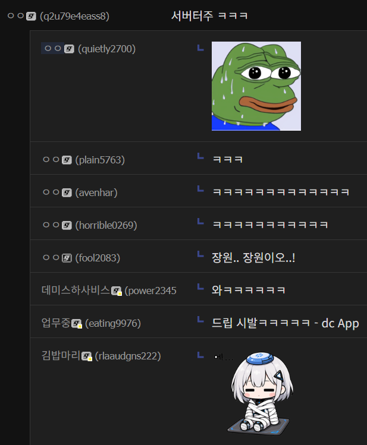

그래서 클로드가 잠깐 터진거였군
근데 사실 늘 하던 짓이잖아
사용량 감산했다가 망하고 똥고쇼해서 할인하다가 신모델로 칭찬받고 서버 터져서 다시 사용량 감산하고
gpt2 시절부터 늘 그런 사이클이어서 사실 새삼스럽지 않음
솔직히 클로드도 정도만 다를 뿐 늘 그 사이클임. '할인' 파트만 없음
그래서 난 4개 다 구독해둠
AI너무좋아청년
중년임
자랑이다
4개다 구독 미친ㅋㅋㅋㅋㅋ
근데 사실 그게 합리적인걸. 내 패턴엔
나는 하드코어하게 한 세션을 많이 쓴다기보단 짧은 세션을 여러차례 가져가는 스타일이라
1주 사용량은 다 털어쓴적이 한번도 없고 5시간 사용량은 주기적으로 터짐
그래서 20달러 4개 구독하고 삼
와 매달 12만원ㄷㄷ 개붕이 부자네 휫짜좀
제미나이는 사이클이 없나요?
플러스도 사용량 줄었나? ㅋㅋㅋ
꼴 보면 담합 같아
출시-구독거지이동-너프-옆회사출시-구독거지이동-너프
재미나이: 0_0
서버가 터져 죽습니다